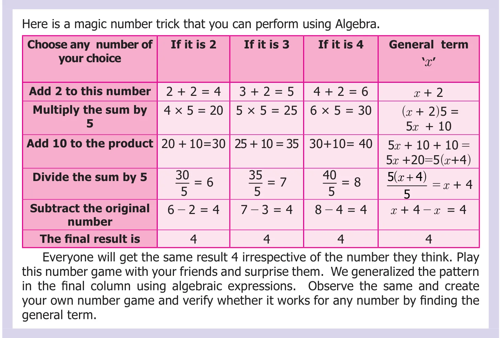

We have discussed about algebraic expressions. Now, let us see how to add and subtract algebraic expressions.
Situation: Kannan has some number of beads and Aravind has 20 beads more than Kannan. Kavitha says that she has 3 more beads than the number of beads that Kannan and Aravind together have. How will you find the number of beads that Kavitha have.
Now we see that even though 3 persons are involved with 3 unknown quantities, we make use of one variable, since all the three variables are related.
Let that one variable be \(x\) which represents the number of beads that Kannan has.
Aravind has 20 more beads than Kannan. That is \(x + 20\).
Kavitha has 3 beads more than Kannan and Aravind have together. So, the number of beads that Kavitha has is given by \(x+x+20+3\).
Now, we change the situation. Instead of Aravind has 20 more beads than Kannan, suppose Aravind has 20 beads less than Kannan.
If Kavitha has 3 beads more than what Kannan and Aravind have together, then find the number of beads that Kavitha has.
Now, Aravind has \(x - 20\) beads. So, the number of beads that Kavitha has, is given by \(x + x - 20 + 3\).
For example, to add \(8ab\), \(4ab\) and \(2ab\), where \(ab\) is variable, we add the co-efficients alone, that is \(8ab + 4ab + 2ab = (8 + 4 + 2)\,ab = 14\,ab = 14ab\).
In the same way, we can add the algebraic expressions. Let us try to add the expressions \(11y + 7\) and \(5y - 3\), where \(11y\) and \(5y\) are like terms with a variable \(y\) and 7 and \(-3\) are constants (like terms).
Hence, \((11y + 7) + (5y - 3) = [11y + 5y] + [7 + (-3)]\)
\(= (11 + 5)\,y + (7 - 3)\)
\(= 16y + 4\).
Try this
Add the terms: i) \(3p, 14p\) ii) \(m, 12m, 21m\) iii) \(11abc, 5abc\) iv) \(12y, -y\) v) \(4x, 2x, -7x\)
Example 3.5
Add the expressions: (i) \(pq - 1\) and \(3pq + 2\) (ii) \(8x + 3\) and \(1 - 7x\)
Solution
i)
\((pq - 1) + (3pq + 2) = (pq + 3pq) + (-1 + 2)\)
\(= (1 + 3)pq + 1\)
\(= 4pq + 1\)
ii)
\((8x + 3) + (1 - 7x) = 8x + 3 + 1 - 7x\)
\(= (8x - 7x) + (3 + 1)\)
\(= (8 - 7)\,x + 4\)
\(= x + 4\).
Subtraction of a term can be looked as addition of its additive inverse as we saw in subtraction of integers. To understand subtraction of algebraic expression, let us consider subtraction of algebraic expression with one term.
For example, to subtract \(6y\) from \(12y\), we can add \(12y\) and \((-6y)\).
Thus we have, \(12y + (-6y) = 12y - 6y\)
\(= (12 - 6)y = 6y\).
Now, let us subtract \(-mn\) from \(3mn\). Additive inverse of \(-mn\) is \(mn\). Hence, we have to add \(mn\) with \(3mn\). Thus, \(3mn + mn = (3 + 1)mn = 4mn\).
Similarly, we can subtract two algebraic expressions. For example, to subtract \(13a - 2\) from \(25a + 11\), we have to add the additive inverse of \(13a - 2\) with \(25a + 11\).
Additive inverse of \(13a - 2\) is \(-(13a - 2) = -13a + 2\)
Therefore, \(25a + 11 - (13a - 2) = (25a + 11) + (-13a + 2)\)
\(= (25a - 13a) + (11 + 2)\)
\(= 12a + 13\)
Note
- Subtracting \(4y\) is the same as adding \(-4y\) and subtracting \(-11x\) is the same as adding \(11x\).
- We know that, \(-3\) is the additive inverse of 3. In the same way \(-x\) is an additive inverse of \(x\). Hence, \(x\), \(-x\) are equal in numerical value; but opposite in sign. Therefore, \(x + (-x) = 0\). But, \(x - (-x) = x + x = 2x\).
Example 3.6
Subtract: i) \(7pq\) from \(11pq\) ii) \(-a\) from \(a\) iii) \(5x + 7\) from \(21x + 9\)
Solution
i) \(11pq - 7pq\). Additive inverse of \(7pq\) is \(-7pq\)
\(11pq + (-7pq) = 11pq - 7pq = (11 - 7)pq = 4pq\)
ii) \(a - (-a)\). Additive inverse of \(-a\) is \(a\).
So, \(a + a = 2a\)
iii) \(21x + 9 - (5x + 7)\). Additive inverse of \(5x + 7\) is \(-(5x + 7)\).
\((21x + 9) + [-(5x + 7)] = (21x + 9) - (5x + 7)\)
\(= 21x + 9 - 5x - 7\)
\(= (21 - 5)x + (9 - 7)\)
\(= 16x + 2\).
Think
\(3x + (y - x) = 3x + y - x\). But, \(3x - (y - x) \neq 3x - y - x\). Why?.
Example 3.7
Simplify: \(100x + 99y - 98z + 10x + 10y + 10z - x - y + z\)
Solution
In the given algebraic expression, \(x, y, z\) are the variables.
Let us group the like terms.
\(100x + 99y - 98z + 10x + 10y + 10z - x - y + z\)
\(= (100x + 10x - x) + (99y + 10y - y) + (-98z + 10z + z)\)
\(= (100 + 10 - 1)x + (99 + 10 - 1)y + (-98 + 10 + 1)z\)
\(= (110 - 1)x + (109 - 1)y + (-98 + 11)z\)
\(= 109x + 108y + (-87)z\)
\(= 109x + 108y - 87z\).
Note
For adding or subtracting algebraic expressions, we can write the like terms one after the other horizontally by using brackets or one below the other vertically.
Example 3.8
i) Add: \(3x - 4y + z\) and \(2x - z + 3y\) ii) Subtract \(2x - 5y\) from \(4x + 3y\)
Solution
i)
\((3x - 4y + z) + (2x - z + 3y)\)
\(= (3x + 2x) + (-4y + 3y) + (z - z)\)
\(= (3 + 2)x + (-4 + 3)y + (1 - 1)z\)
\(= 5x - 1y + 0z\)
\(= 5x - y\).
Aliter :
\[\begin{array}{rrrr} & 3x & -4y & +z \\ (+) & 2x & +3y & -z \\ \hline & 5x & -\,y & +0 \end{array}\]
ii)
\((4x + 3y) - (2x - 5y)\)
\(= (4x + 3y) + (-2x + 5y)\)
\(= (4x - 2x) + (3y + 5y)\)
\(= (4 - 2)x + (3 + 5)y\)
\(= 2x + 8y\).
Aliter :
\[\begin{array}{rrr} & 4x & +3y \\ (-) & +2x & -5y \\ & (-) & (+) \\ \hline & +2x & +8y \end{array}\]
Think
What will you get if twice a number is subtracted from thrice the same number?
Example 3.9
Mani and his friend Mohamed went to a hotel for dinner. Mani had 2 idlies and 2 dosas whereas Mohamed had 4 idlies and 1 dosa. If the price of each idly and dosa is \(x\) and \(y\) respectively, then find the bill amount in \(x\) and \(y\).
Solution
Given that, the price of one idly is ‘\(x\)’ rupees and the price of one dosa is ‘\(y\)’ rupees
So, Mani’s bill amount: \((2 \times x) + (2 \times y) = (2x + 2y)\)
Mohamed’s bill amount: \((4 \times x) + (1 \times y) = 4x + y\)
Therefore, the total bill amount \(= (2x + 2y) + (4x + y)\)
\(= (2 + 4)x + (2 + 1)y = 6x + 3y\).
Aliter:
In total, they had \(2 + 4 = 6\) idlies. i.e. \(6 \times x = 6x\)
and \(2 + 1 = 3\) dosas. i.e. \(3 \times y = 3y\)
Therefore, the total bill amount \(= 6x + 3y\).
Example 3.10
Rani earns ₹200 on the first day and spends some amount in the evening. She earns ₹300 on the second day and spends double the amount as she spents on the first day. She earns ₹400 on the third day and spends 4 times the amount as she spents on the first day. Can you give an algebraic expression of the total amount with her, at the end of the third day.
Solution
The amount earned on the first day is ₹200.
Let the amount spent on the first day be ₹\(x\). Amount with her at the end of the first day is \((200 - x)\).
Amount earned on the second day is ₹300 and the amount spent on the second day is ₹\(2x\). The amount left on the second day is \(300 - 2x\).
Similarly, the net amount that she would have on the third day is \(400 - 4x\). Therefore, the total amount that she would have at the end of three days is \((200 - x) + (300 - 2x) + (400 - 4x)\).
That is, \(200 + 300 + 400 + (-1 - 2 - 4)x\)
\(= 900 + (-7)x\)
Thus the required algebraic expression is \(900 - 7x\).
Activity
